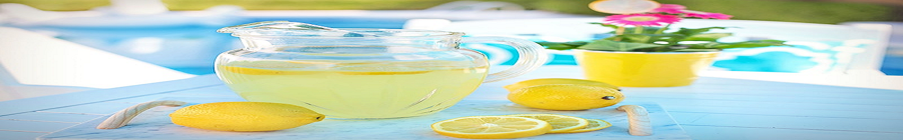

MAXWELL IWE | WDD 130 - 2
The Virtual Lemonade Stand website allows you to create your own personalized lemonade drinks by selecting from various flavors, mix-ins, and ingredients. Here's how you can use the website:
- Choose your ingredients: Start by selecting the flavors, mix-ins, and ingredients you want to use in your lemonade. The website should have a list of options for you to choose from.
- Follow the recipe: The website should provide a step-by-step guide for making your lemonade. Follow the instructions carefully to ensure your lemonade turns out perfectly.
- Use the shopping list: If you need to purchase ingredients, the website should provide a shopping list of items you'll need. This makes it easy for you to find and purchase everything you need to make your lemonade.
- Enjoy your creation: Once your lemonade is ready, sit back, relax, and enjoy your personalized creation!